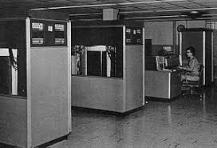
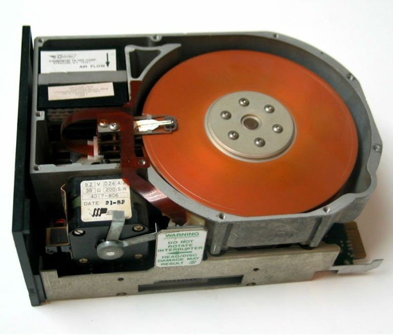
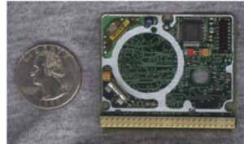
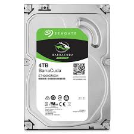
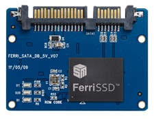
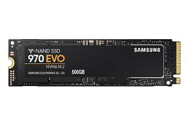
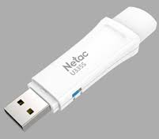
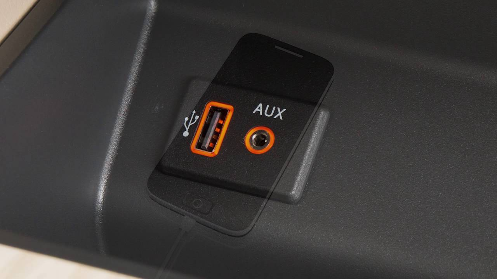
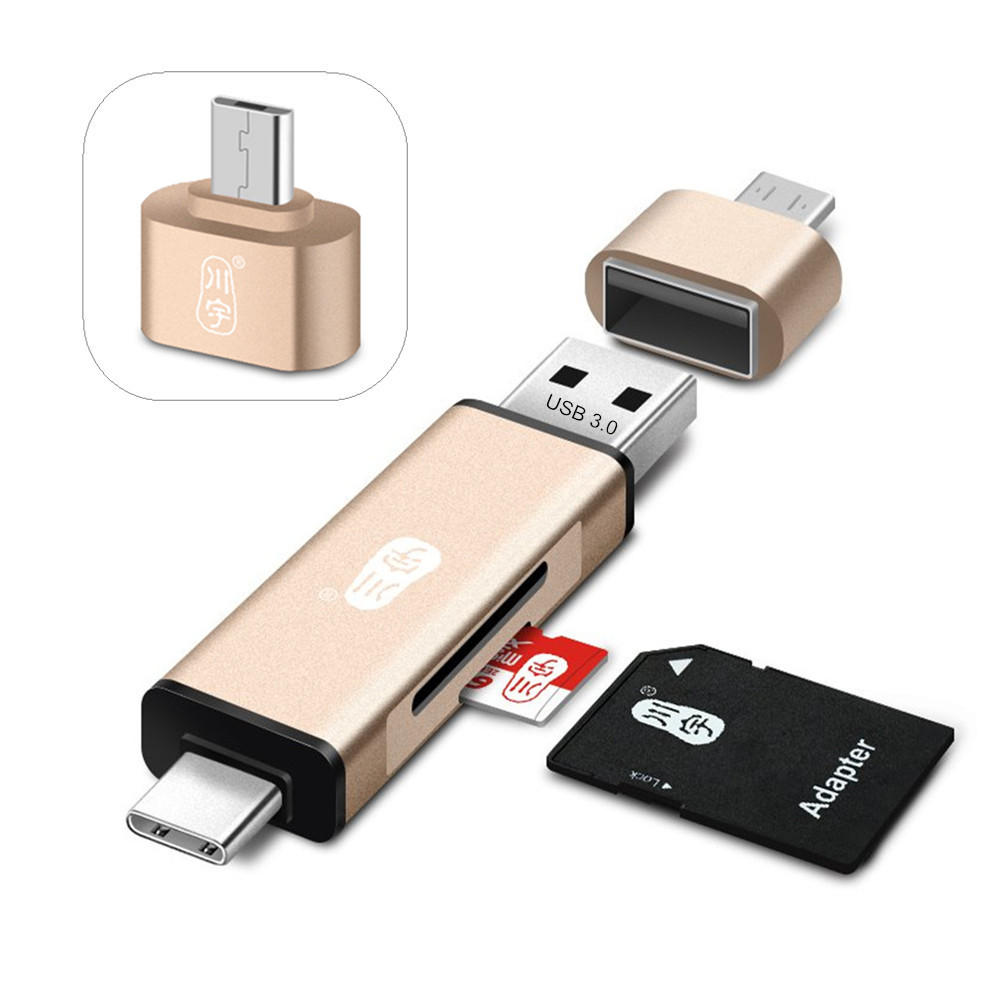

The first/ original hard drive that was available to the general public was invented by the company IBM. This version came with the RAMAC 305 computer. The computer was first made in 1956 (head of development was by Reynold B. Jonson) and this computer was the size of 2 refrigerators while weighing about a ton. Surprisingly for its size it only held 5mb which was about $10,000 per megabyte.
Later on (in the 1980s), a 1gb hard drive was released by IBM named the 3380. It weighed 500 pounds with a 2.5gb capacity while costing around $40,000. Meanwhile Seagate was producing another hard drive which was 5.25 inches with the capacity of 5mb and costed around$1,500.
In 1990, hard drives became smaller with examples of HP launching harddrives like the Kitty Hawk. This was a 1.3 inch drive that was released in 1992.
Now hard drives are on the edge of going away because of storage devices like SSD (scroll to see more). Hard Drives now, compared to other storages are easily damagable and big. Though the advantage is that it can hold a lot more storage ex: 4tb
The original SSD originated around 1950 with a magnetic core memory and a card capacitor read-only store (CCROS). These were pretty much never used.
Through the 1970s to the 1980s, most of the SSD’s were never used because of the price and the amount of storage (around 2mb) which caused many companies closing their stores. This in resulted the technology being abandoned until 1984 when the company Tallgrass Technologies Corporation decided to create a backup unit consisting of 40 megabytes off storage.
around the 1990's 2mb, 4mb, 6mb, 8mb SSD started to get released selling for high prices like $5000. This was commercialized by a company named M-Systems which had developed this technology from 1989 but never decided to release it.
From 2000-present, the technology started getting developed resulting in the SSD having a lot of usage for computers that need faster speeds in various ways. Now there are even M.2 SSD's which run even faster than the standard ones.
In 1984 the first type of flash memory was developed by Fujio Masuoka who which at the time was working for the company Toshiba. He created the first/ original EEPROM which stood for Electronically erasable programmable read-only memory. This name was later changed to “flash” which was suggested by Shoji Arizumi (a colleague).
A year before the change of a millennium, 1999, the usb 1.0 and 1.1 was invented/ released to to the public. To this day there are many disputes on who created this. M-Systems an Israeli company, is widely known as the people who first created the original usb stick. As a statement from the company, they say it was used to eliminate the amount of cables and connections devices needed.
The main use of the usb in the era from 2000 to 2010, this was because the usb 2.0 was created which supported up to 480 mb/s, this resulted in the reduced amount of use in floppy disks, cd, etc. Through the years, companies decided to add more usb slots to more technology like the xbox and cars (nissan was the first to do this).
In the present there are usb supporting high storages like the 2tb drives and OTG (on the go) usb drives that were available to connect to phones to increase there storage.
